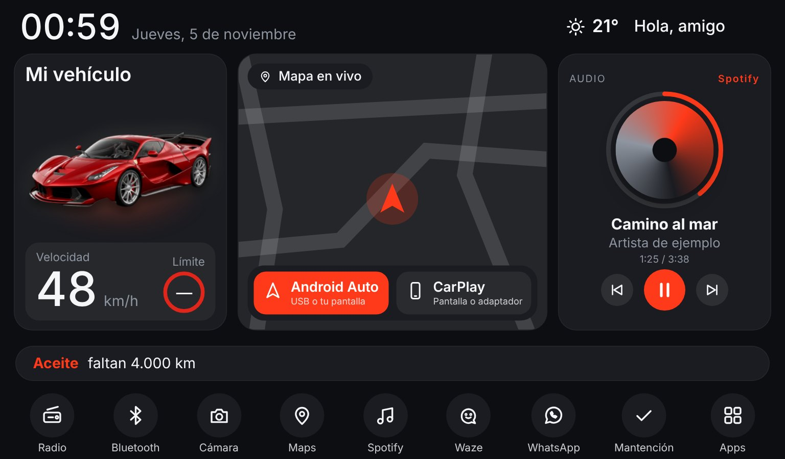
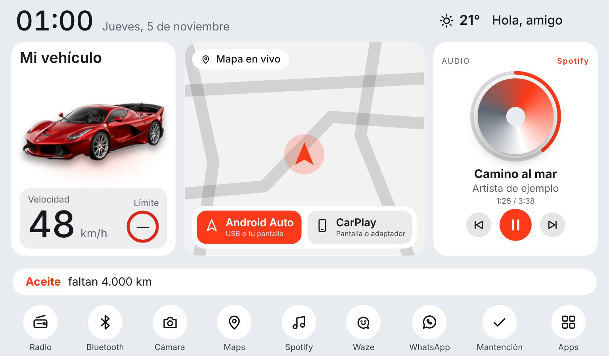
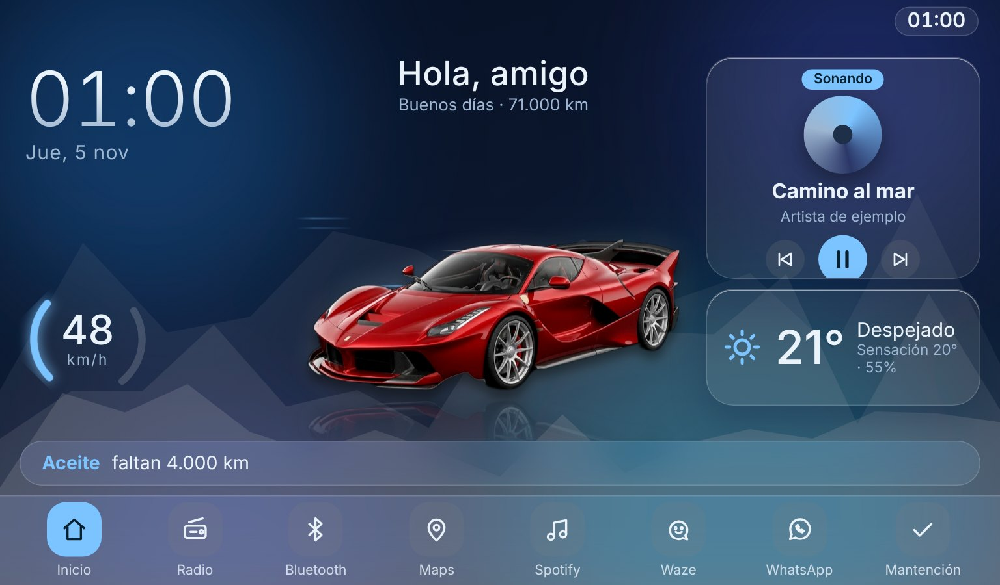

Un menú que no es el tuyo
Íconos genéricos y letras chicas, iguales en todos los autos.
Gratis · Sin anuncios · Hecho en Chile
Diseña desde el celular cómo se verá: tu foto sin fondo, tu mapa, tu música y tus avisos de mantención. Después activas tu código en la radio. Gratis.

¿Te suena?
La pantalla de fábrica es igual para todos los autos y casi nada de lo que muestra sirve mientras manejas.
Íconos genéricos y letras chicas, iguales en todos los autos.
Sin velocidad grande, sin la música a la vista y sin avisos cuando te toca restricción.
Ni tu foto ni tu nombre: es la pantalla de fábrica, no la tuya.
Tablero cambia solo la pantalla de inicio. Todo lo demás de tu radio sigue igual.
Funciones
Sube una foto de tu auto: le quitamos el fondo en tu celular y la dejamos de protagonista, con versión de noche y luces encendidas.
Tu posición y rumbo sobre el mapa de tu ciudad. Guarda solo los mapas de donde pasas, y con un botón los de toda tu zona, para verlos sin internet.
Un botón para cada uno. Abre el de tu pantalla o la app que ya tengas instalada en la radio.
La canción, el artista y la carátula de lo que suene, con anillo de progreso y botones para pausar o cambiar.
Te muestra cuánto falta para el aceite, la revisión técnica, el permiso de circulación y otras mantenciones.
Velocímetro por GPS y un aviso si pasas el límite que tú fijes.
Al entrar a la ciudad te avisa si hoy te toca. Santiago, Bogotá, Medellín, Cali y Quito.
Te saluda por tu nombre al encender el auto, con las frases que tú elijas.
Cambia sola entre claro y oscuro, y al encender las luces muestra tu auto de noche.
Scanner OBD
Si tienes un scanner OBD2 ELM327 (el de Bluetooth o Wi-Fi que se enchufa bajo el volante), Tablero puede hablar con él. Es opcional: sin scanner, todo funciona igual.
Funciona con los scanners más comunes, como el «Scanner Automotriz OBD2 ELM327 Bluetooth V2.1». Lo eliges entre los ya emparejados con tu radio.
En Ajustes pulsas «Probar conexión» y ves al instante si el scanner conecta, el voltaje, si el auto responde y si la luz del motor está encendida.
Muchos scanners baratos responden a medias. Tablero no se rinde a la primera, y si no logra conectar deja de insistir en vez de quedar reintentando sin parar.
Una pantalla «Auto» con las revoluciones, la temperatura del motor y el voltaje reales, que se actualizan mientras manejas. Las alertas de motor caliente y batería llegan después.
Si la luz del motor está encendida, ves los códigos de falla traducidos a palabras simples, sin tecnicismos. Hay explicación para los más comunes; los demás se orientan por su tipo.
La app ya suma sola los km con el GPS. Si tu auto informa su kilometraje por el scanner (no todos lo hacen), usa ese número, que es el real, para tus avisos de aceite y mantención.
Tablero no reemplaza a un mecánico: los datos del scanner son una ayuda y no todos los autos entregan todos los datos. Ver preguntas sobre el scanner
Diseños
9 temas, 9 distribuciones, escenas, decoraciones de temporada (Fiestas Patrias, Halloween, Navidad, Año Nuevo) y tus colores.


Diséñala
Elige tu país y tu radio, sube la foto de tu auto y mira cómo queda en vivo, de día y con las luces encendidas.
Así se verá en tu radio (1024 × 600)
Al encender las luces del auto, la pantalla pasa sola a modo noche y muestra tu foto con luces. Desliza la pastilla de mantención para ver cada aviso, o tócala para abrir la lista completa. El clima, la canción, la emisora y el límite de velocidad son de ejemplo.
Con tu país activamos el aviso de restricción que te corresponde: restricción vehicular en Chile y pico y placa en Colombia y Ecuador.
Funciona en radios Android de pantalla grande.
Toca el botón de inicio (la casita). ¿Ves íconos de apps como Play Store, Chrome o YouTube?
Busca en los ajustes de la radio la pantalla con la versión. Según la marca se llama:
Si no puedes hacer captura, tómale una foto con el celular. Es opcional, pero la analizamos para evitar sorpresas. No guardamos la imagen.
Si tu radio es de pantalla grande con apps y ya tiene Android Auto o CarPlay, no se toca: sigue funcionando igual y puedes ponerlo en tu barra de apps.
Si tu radio es la original del auto y solo tiene Android Auto o CarPlay, no es compatible: eso es tu celular mostrándose en la pantalla, no la radio por dentro.
Sube una foto de tu auto: es la que verás en la pantalla de la radio. Nosotros solo le quitamos el fondo.
No importa el fondo: la calle, tu garaje o el estacionamiento sirven. El fondo se quita aquí mismo, en tu celular. Tu foto solo se envía cuando haces tu pedido, para armar tu pantalla.
Cuando prendes las luces del auto, la radio pasa sola a modo noche y muestra tu foto con los faros encendidos. Toca cada faro (y los neblineros, si tiene) en la foto de abajo.
Mientras no subas tu foto, mostramos un auto de ejemplo.
Sirve para sugerirte fondos y diseños (por ejemplo, los de camioneta 4x4). Tu foto no cambia.
La frase reemplaza al “Buenas tardes” en la pantalla y en el saludo por voz. Déjala vacía para el saludo normal.
Si la escribes, aparece en el diseño “Tablero”.
Elige cómo se verá la pantalla de inicio de tu radio. Lo ves en vivo a la derecha.
“Automática” cambia sola con la hora del día.
Una carretera, tu ciudad o tu familia, o el logo de tu negocio. Se queda en tu celular y no se envía con el pedido.
El launcher abre las apps que ya tengas instaladas en la radio.
Activa solo lo que te sirva. Los avisos son una ayuda y pueden fallar: no reemplazan las señales de tránsito ni el manual de tu auto.
Tu pantalla es gratis. Al terminar recibes un código para activar la app Tablero en tu radio.
Es tu código de activación (TBL-XXXX-XXXX-XXXX). Lo escribirás en la app, en tu radio.
¿Te gusta Tablero? Invítame un café ☕ (opcional).
¿Ya tienes tu código? Mira cómo instalarlo en tu radio.
Al presionar el botón guardamos tu pedido y tu foto (ya sin fondo) y te mostramos tu pedido listo para enviarlo por WhatsApp a Daniexpress. Ahí te mandan tu código de activación.
Países
Elige tu país al diseñar y la radio usa el GPS para avisarte al entrar a la ciudad si ese día te toca.
Restricción vehicular de Santiago, según la tabla del Ministerio de Transportes: con sello verde, sin sello y autos inscritos desde 2011.
Pico y placa de Bogotá (por día par o impar), Medellín y Valle de Aburrá, y Cali.
Pico y placa de Quito, con sus dos franjas horarias.
Estas reglas cambian cada semestre o cada año. En el configurador ves la fuente de cada una y hasta cuándo vale, y si la regla guardada vence, la radio te avisa que hay que revisarla en vez de afirmar algo equivocado.
En 4 pasos
Compatibilidad
Si es Android, de pantalla grande y horizontal, muy probablemente sí. En el primer paso del configurador puedes subir una captura de tu radio y la revisamos.
Es lo que pide la app. Si tu radio abre la Play Store o instala apps como YouTube o Waze, es Android.
Se instala como cualquier app y solo reemplaza la pantalla de inicio. Si la desinstalas, tu radio queda como antes.
Para activar el código, el clima y bajar mapas nuevos. Los mapas ya guardados se ven sin conexión. Los datos del celular sirven.
Si tu radio tiene pantalla grande y puedes abrir la Play Store o instalar apps como YouTube o Waze, es Android y sirve. Si es la radio que vino de fábrica y solo muestra tu celular por Android Auto o CarPlay, no sirve. En el paso 1 puedes subir una captura de la pantalla de tu radio y te decimos si es compatible.
No. Es opcional: sin scanner todo funciona igual. El kilometraje se suma solo con el GPS y los avisos de mantención siguen igual.
Los OBD2 con chip ELM327 por Bluetooth o por Wi-Fi, que se enchufan al puerto bajo el volante. Con Bluetooth, primero empareja el scanner en los ajustes de Android de tu radio y luego lo eliges en Tablero → Ajustes → Scanner OBD. Los scanners solo Bluetooth LE todavía no están soportados.
En Ajustes puedes probar la conexión. Y en la pantalla «Auto» ves en vivo las revoluciones, la temperatura del motor y el voltaje, la luz del motor y los códigos de falla explicados en palabras simples. Es una función nueva: no todos los autos ni todos los scanners entregan todos los datos.
Nada: siguen funcionando igual. La app solo cambia la pantalla de inicio y abre las apps que ya tienes.
Nada: tu pantalla es gratis. Recibes un código de activación para instalarla en una radio.
Es una clave con el formato TBL-XXXX-XXXX-XXXX. Se escribe una vez en la app, en la opción Activar código, y queda ligada a esa radio. Si cambias de radio, la pasas a la nueva una vez, gratis.
Una sola, como la tengas: con el auto completo, de lado o en diagonal, de día y sin gente delante. No importa el fondo: se lo quitamos aquí mismo, en tu celular. Tu foto se envía sola cuando haces tu pedido, y antes de eso se queda en tu teléfono.
Instalas la app en la radio, la abres, presionas Activar código y escribes tu código. Tienes la guía paso a paso en esta página.
Sí, al activar el código (puedes usar los datos de tu celular). Después, el clima y los mapas nuevos usan internet. Los mapas de donde ya pasaste, o que guardaste con el botón «Guardar mapa», se ven sin conexión, y el resto de la pantalla también.
La restricción vehicular permanente para autos particulares solo existe en Santiago (Provincia de Santiago, San Bernardo y Puente Alto). La radio usa el GPS y te avisa al entrar a esa zona, solo cuando ese día te toca. En el resto del país no te molesta.
Cuando terminas tu diseño, presionas “Pedir mi pantalla”, te mostramos tu pedido listo para copiar y lo envías por WhatsApp a Daniexpress. Ellos te mandan tu código.
Escríbenos con una foto o video del problema y lo revisamos. Si no se puede resolver, anulamos tu código y desinstalas la app como cualquier otra: tu radio queda como antes.
Escríbenos y te respondemos. Te respondemos por WhatsApp.
Tablero es gratis y lo hace una sola persona. Si te gusta, un café ayuda a seguir mejorándolo: probar más radios, el scanner OBD y nuevas pantallas. Es totalmente opcional.
Diséñala en minutos y pruébala. Si no te convence, la desinstalas y listo.